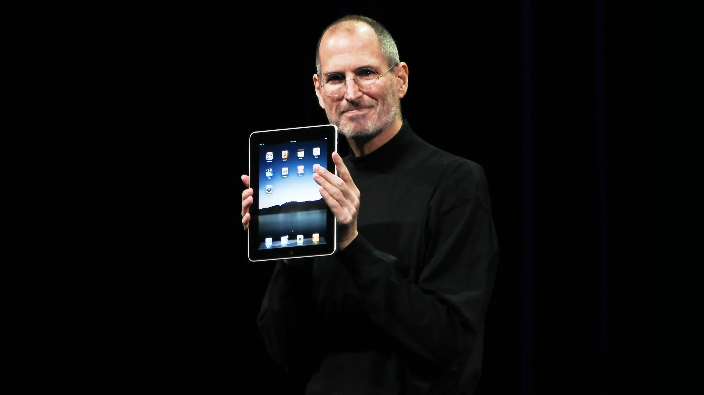
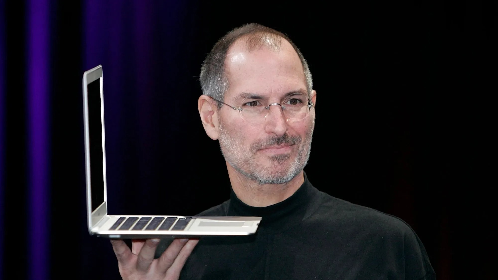
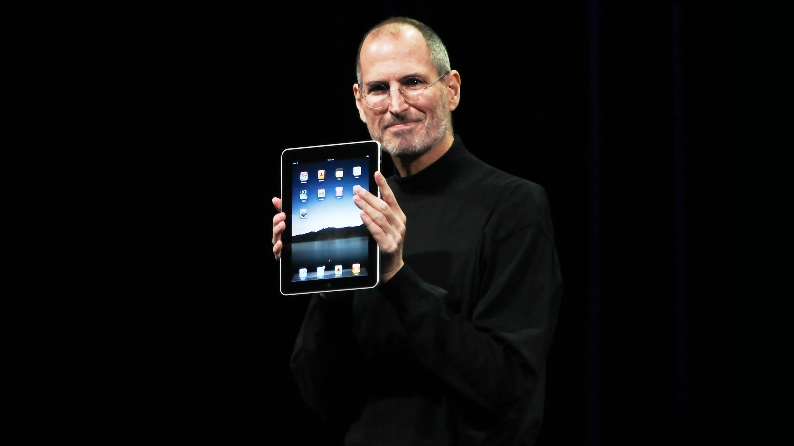
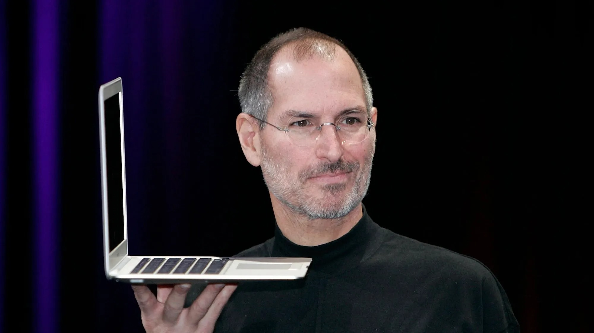
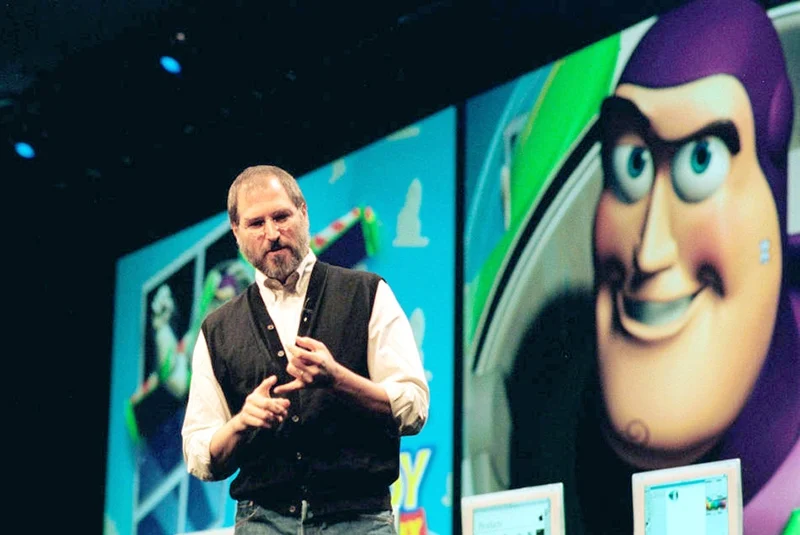
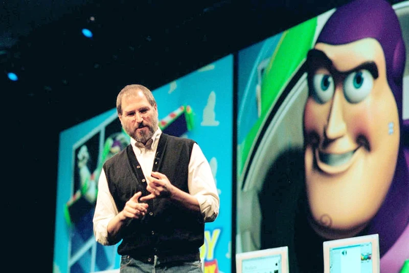

Faites connaissance avec Steve.


 



Steve Jobs, cofondateur d'Apple Inc., était un entrepreneur visionnaire qui a transformé l'industrie technologique. Né en 1955 et adopté par un couple californien, Jobs a montré un intérêt précoce pour l'électronique. Il a brièvement étudié au Reed College avant d'abandonner et a ensuite cofondé Apple avec Steve Wozniak en 1976 dans le garage de ses parents. Ensemble, ils ont lancé les Apple I et II, révolutionnant le domaine de l'informatique personnelle. Après des conflits internes qui ont conduit à son départ d'Apple en 1985, Jobs a fondé NeXT et repris Pixar, où il a joué un rôle crucial dans le développement de l'animation par ordinateur. En 1997, il est retourné chez Apple, alors en difficulté, et a mené l'entreprise vers des sommets révolutionnaires avec des produits comme l'iMac, l'iPod, l'iPhone et l'iPad. Son accent sur le design, l'innovation et l'expérience utilisateur a redéfini la culture technologique mondiale. Jobs a lutté contre un cancer du pancréas pendant plusieurs années et est décédé en 2011, laissant un héritage durable de créativité, d'audace et de progrès technologique.


 
